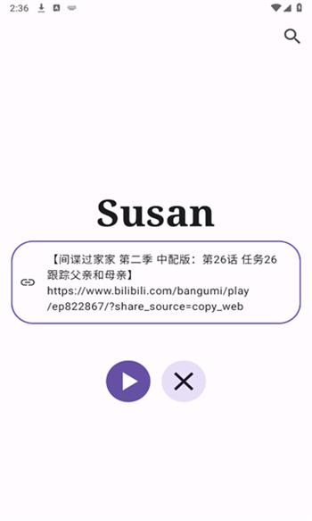

Susan 到底是什么？一篇给安卓用户的快问快答
Susan 是一款开源无账号的安卓视频解析工具，支持腾讯视频、爱奇艺、优酷等主流平台的链接解析和站内搜片两条路径。本文用问答形式把安装、使用、常见问题一次说清。
整理一篇关于 Susan 的快问快答——毕竟这款工具在安卓圈里传得广，但真正上手前总有些疑问绕不过去。直接开始。
Susan 是什么？一句话能说清吗？
能。Susan官网 是一款开源的安卓视频解析工具，核心能力是把各大视频 App 的播放页链接拿过来，然后帮你解析出可直接观看的资源。它不做账号体系、不收集任何用户数据，申请的权限只有网络。说穿了就是个「链接进去 → 资源出来」的中间件，但背后维护着多家视频平台的解析接口。
它和市面上那些需要 VIP 会员才能看的「聚合播放器」不是一路东西——Susan 不存内容、不搞会员，就是帮你把本来需要在视频 App 里看的东西换个方式调出来。
谁需要装它？
两类人最典型：第一类是不想同时装五六个视频 App 的人，手机里留着腾讯、爱奇艺、优酷、芒果、B 站五个图标看着烦，Susan 一个顶五个；第二类是不想开任何视频会员的人——这也是它最出名的用途。其他场景就多了：出差在外临时想看个剧、家里老人不会操作多个 App、刷到朋友分享的链接想快速看一眼……只要你有「视频链接 + 想看」这两个条件，Susan 就有用。

怎么安装？听说要开「未知来源」？
对，这一步安卓系统默认拦着，因为 Susan 不在应用商店上架（开源项目通常都这样）。流程很简单：从官方下载拿好 APK 点开 → 系统弹禁止安装的提示 → 点弹窗里的「设置」按钮 → 给你刚才用来下 APK 的工具（夸克网盘、文件管理器之类）勾上「允许安装未知应用」 → 返回再点一次 APK 就装好了。小米、华为、OPPO、vivo 各家设置路径略有差异，但逻辑完全一样：找到「安装未知应用」那个入口，给下载工具授权就行。而且只需要设一次，下次用同一个工具下别的 APK 也能直接装。
核心功能到底怎么用？两条路径是什么意思？
这是 Susan 最特别的地方——它给你留了两条路，一条走不通另一条还能用。
第一条：链接解析。 你在腾讯视频、爱奇艺、优酷、芒果 TV、B 站这些 App 里，停在某一集的播放页，点分享按钮 → 复制链接，然后回到 Susan 里粘贴进去，点解析。正常情况下几秒内就会弹出可播的资源。复制链接的操作各家 App 略有不同，但通用思路是：播放页 → 分享图标（↑ 或 ···）→ 菜单里找「复制链接」。腾讯视频的「复制链接」藏在社交分享入口的后面，得滑一下才看得到；B 站的分享面板选项最多，耐心往左滑几下。

第二条：站内搜片。 直接在 Susan 里搜剧名或演员名，它自己的资源源会返回结果，点进去就能播。这条路径的好处是你不用切来切去找链接，也不用装那五六个视频 App——打开 Susan 直接搜就行。
两条路径走的是完全不同的资源源，这也是 Susan 为什么要做双通路设计：一个挂了另一个不受影响，相当于自动带了备胎。
链接突然解析不出来了怎么办？
先按这个顺序排查，大概率能定位：
第一步：确认是这条链接坏了还是整条解析路径坏了。 去同一个视频 App，找另一部完全不同的剧，复制播放页链接粘进来试。如果能解析，说明只是原来那条链接本身过时了——视频平台有时会调整单集的地址参数格式，旧链接自然失效。这种情况重新走一遍「分享 → 复制链接」拿新地址就行。
第二步：换网络试一下。 关掉 WiFi 用流量，或者反过来。有些平台接口在特定网络环境下访问会有问题，两条网络都不行再往下看。
第三步：整条路径都挂了。 同一个平台所有链接都解析不出来，大概率是平台接口被改了。短期救急就切到站内搜片那条路，两条路互不干扰；长期等应用更新——Susan 是社区维护的开源项目，平台改版后社区通常会在几天内跟进修复。如果等了一周多还没更新，也可以暂时换同类工具或者直接去视频 App 看，这种情况出现频率不高。更详细的排查和接口变动记录可以去Susan文档翻一下。
开源到底意味着什么？和我有什么关系？
三个实际好处。第一，安全可审计——闭源 App 里偷偷收集你位置、通讯录、浏览记录你没法确认，但 Susan 的代码全部公开，有能力的开发者可以逐行审查。对于它声明的「无账号、无数据收集」，开源让这句话变得可信，不是空口说白话。第二，社区维护接口——视频平台改版快，接口得跟着改，开源意味着任何有能力的人都能提交修复代码，比单人维护快得多。第三，没有版权限制——APK 随便分享、随便用，也不会弹会员广告。
开源也有局限：更新节奏不固定（有时几小时修复，有时等一两周），功能比较极简（没有自动下一集、播放记录、收藏这些），遇到问题没有官方客服电话，只能去源码仓库提 Issue。但话说回来，Susan 本身就是走极简路线的——它不想做个内容平台，就想做个纯粹的解析工具。
和同类的视频解析工具比，Susan 的优势在哪？
说实话同类工具不少，但 Susan 的差异化很清楚。第一，真开源真无广告——很多号称开源的同类要么源码不全、要么偷偷塞广告，Susan 这点干净。第二，双路径设计——链接解析和站内搜片两条路并行，一条挂了另一条顶上，用户体验更稳。第三，权限极简——只申请网络权限，不碰通讯录、位置、相机这些敏感权限，这点在同类里算少见的。
当然它也不是完美的：功能简单，没有播放记录和收藏；接口稳定性依赖社区，平台大改时可能要等几天恢复；仅限安卓，iOS 用户就别想了。
值不值得装？长期用会不会有麻烦？
如果你是安卓用户、不想装一堆视频 App、也不想开任何视频会员，值得装，而且值得长期用。它的核心能力稳定、开源可信、不收集数据、两条路径互为备份，日常用完全够。唯一需要心理准备的是：视频平台改接口的频率不会停，遇到解析突然挂了别慌，按前面说的排查顺序走，大部分情况要么换个链接要么等几天更新就恢复。真遇上一周以上没更新的，临时换个工具或者去官方 App 看也不丢人。
作为开源项目，它的源码和打包好的 APK 在三个仓库都有同步维护：GitHub、Gitee、GitCode，随意分享随意用。
最后一句：Susan 是那种装了就忘不掉的工具——平时安静地待在桌面角落，需要的时候帮你省下载、省会员、省切换。